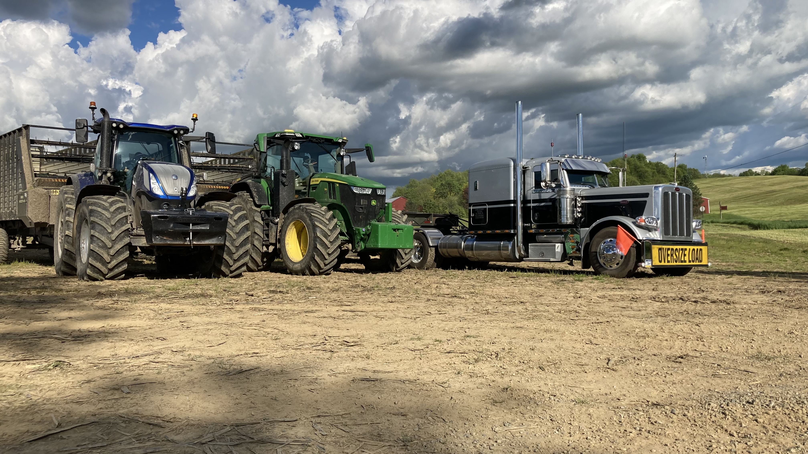
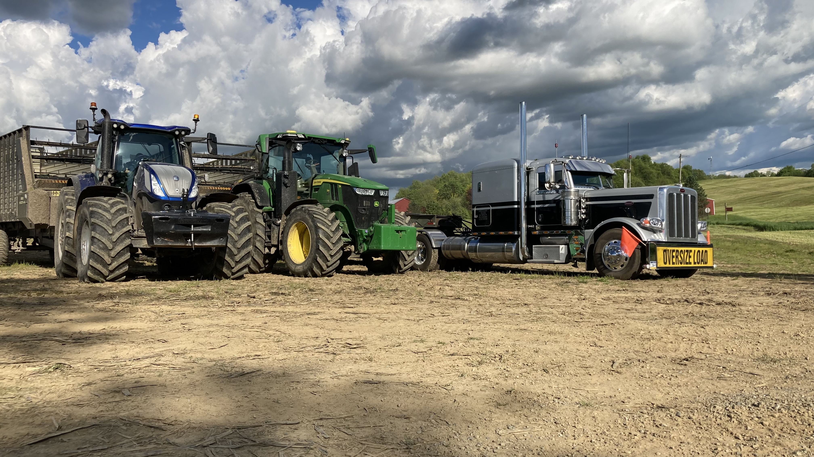

Coleman Custom Harvesting
Here we like running equipment and making cash
Why would womeone want to run farm equipment?
Because someones gotta do it. People need to eat.
Benifits of runnin tratters:
- Speed
- Power
- Focus
- Dopamine
*Downsides may include caffine addiction and random voices*
Times of day we burn the diesel:
- morning
- noon
- afternoon
- evening
- night
 
Some of our equipment Coleman Custom
Harvesting

Some of our equipment Coleman Custom
Harvesting